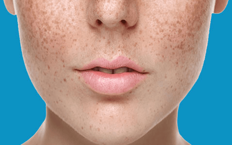

Melasma, also called ‘chloasma’, is a common skin condition of adults in which light to dark brown or greyish pigmentation develops, mainly on the face. The name comes from melas, the Greek word for black. Although it can affect both genders and any race, it is more common in women and people with darker skin-types who live in sunny climates. Melasma usually becomes more noticeable in the summer and improves during the winter months. It is not an infection, it is not contagious and it is not due to an allergy. Also, it is not cancerous and will not change into skin cancer.

The exact cause is not known, but several factors contribute. These include pregnancy, hormonal drugs such as the contraceptive pill, and very occasionally medical conditions affecting hormone levels. Some cosmetics, especially those containing perfume, can bring on melasma. There is research to suggest that it can be triggered by stress. Sunshine and the use of sun-beds usually worsen any tendency to melasma.
Melasma can run in families, suggesting an inherited tendency.
Melasma is simply darker-than-normal skin affecting the cheeks, forehead, upper lip, nose and chin, usually in a symmetrical manner. It may be limited to the cheeks and nose or just occur overlying the jaw. The neck and, rarely, the forearms can also be affected. Areas of melasma are not raised.
It is the cosmetic aspect of melasma that affected people tend to find upsetting. The affected skin is not itchy or sore.
Melasma treatments fall into the following categories, and can be used together:
Skin affected by melasma darkens more than the surrounding skin with exposure to sunlight, so sun-avoidance and sun-protection are important (see the ‘top sun safety tips’ below for more information).
Certain chemicals can reduce the activity of pigment-forming cells in the skin, and of these, hydroquinone is the most commonly used. Hydroquinone creams may cause irritation, and care must be taken to ensure that they are not used for too long in case they cause excessive skin lightening. Hydroquinone can occasionally cause increased darkening of the skin, especially in dark-skinned people. Hydroquinone creams can now only be prescribed by doctors.
Azelaic acid and retinoid creams that are used to treat acne can also help melasma.
All these creams can irritate the skin and are therefore sometimes combined with steroid creams. Some skin bleaching creams contain a mixture of these ingredients.
Chemical peels can improve melasma by removing the outermost cells of the skin that contain the excess pigment. These techniques should be undertaken by an experienced practitioner as they have the potential to make the pigmentation worse, to lighten the skin too much or to cause scarring.
Some types of laser also remove the outer layer of skin, whereas others specifically target the pigment-producing cells. At present, the success of laser treatment is variable, and the possible side effects can be similar to peels and micro-dermabrasion as mentioned above.
These treatments are usually not available as NHS procedures.
Skin camouflage is a highly pigmented crème which is matched to individual skin colour and is relatively difficult to remove. A health care professional will be able to help you locate a local service.